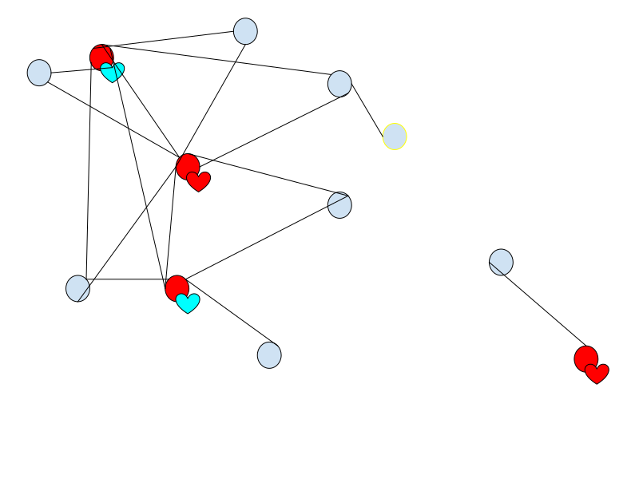

Dither Chat
What is it
Dither Chat is a decentralized communication application using the Dither protocol. Servers are communally hosted with local consensus. Bots and plugins will be supported and also communally hosted. tl;dr Discord but decentralized and better.
Users & Sync
- Each user may have multiple Peers (devices that Dither is installed on)
- Chat Event history can be optionally synced across Peers.
- A peer may host multiple users
- Each UserId must have at least 1 peer that hosts it.
Chat Events
- All Events are signed with the private key of the person who sent it (these will be verified with a config option to let through or ignore unsigned or incorrectly signed events)
- Chat Message structure
- Date sent, last edited, markdown data / embed json, UserID mentions, emoji reactions
- Rich Presence (updating custom statuses and online/offline status)
- Optional storage - can store presence update history (off by default)
- Optional sending, extracts information about what you are currently doing and updates your friends. (on by default)
- Customization options to only share with certain friends
Event Storage - Storage of a sequence of events in memory or storage
- Stored as hash-linked local blocktree that messages are added to and new blocks are created when a certain amount of time elapses between the last message sent or max block size exceeded. Block size can be set to 1 to prevent messages being ordered out-of-order.
- Indexing can be done on a by-block level (TODO: more customization options needed)
- Block structure can allow for thread branching & thread conversation movement across users. (e.g. create a group dm on top of an ongoing conversation)
Trusted Friends Application API
- Option to rank friends manually or by how much you chat with them
- Can mark friends as “Trusted, Neutral or Untrusted”
- Friend rank can be used by other applications
- e.g. for Stellar Consensus Protocol quorum selection
Chat Interface
- Built-in markdown formatting + advanced chat box (similar to discord)
- Link Displaying
- Metadata can be sent so receiver doesn’t have to send request to web pages
- TODO: Do we need to worry about invalid metadata being sent, tricking the user? Perhaps just scanning for suspicious domains is enough.
- Receivers can choose if they want to fetch link data, only fetch commonly used sites (e.g. youtube, twitter, soundcloud etc.) or not fetch anything at all and only display sent link metadata
Direct Messaging
- Simply sending JSON-encoded message/other events to UserID on Dither
Group messaging
- Messages are broadcast over gossipsub and conflicting blocks are ordered by time.
Servers
- Servers are communially hosted by the moderator's computers. However, the owner has full control over the server and can choose who can assist
- Red Nodes are hosting nodes, blue nodes are members. Blue node with yellow stroke is proxying it's connection to the server  Image of a possible dither-chat server arrangement
Roles, Tags & Colors
- To distinguish people in a server, there are roles, name colors, and tags
- Tags are shown next to tagowner's name as a small icon (like in Discord)
- By default there is only 1 tag enabled for a server: the Owner tag.
- There are other tag presets such as Donator, Moderator & Member
- Custom tags can be created and be attached to a specific role.
- Tags should be displayed in order of importance
- Roles can be made for anyone and can have permissions attached to them
- Roles and can also be organized into hierarchies where users can be ranked-up to posses a higher role (usually with more permissions)
- Each role has a color and color priority assigned
- This is used to determine what color a user's username should be assigned